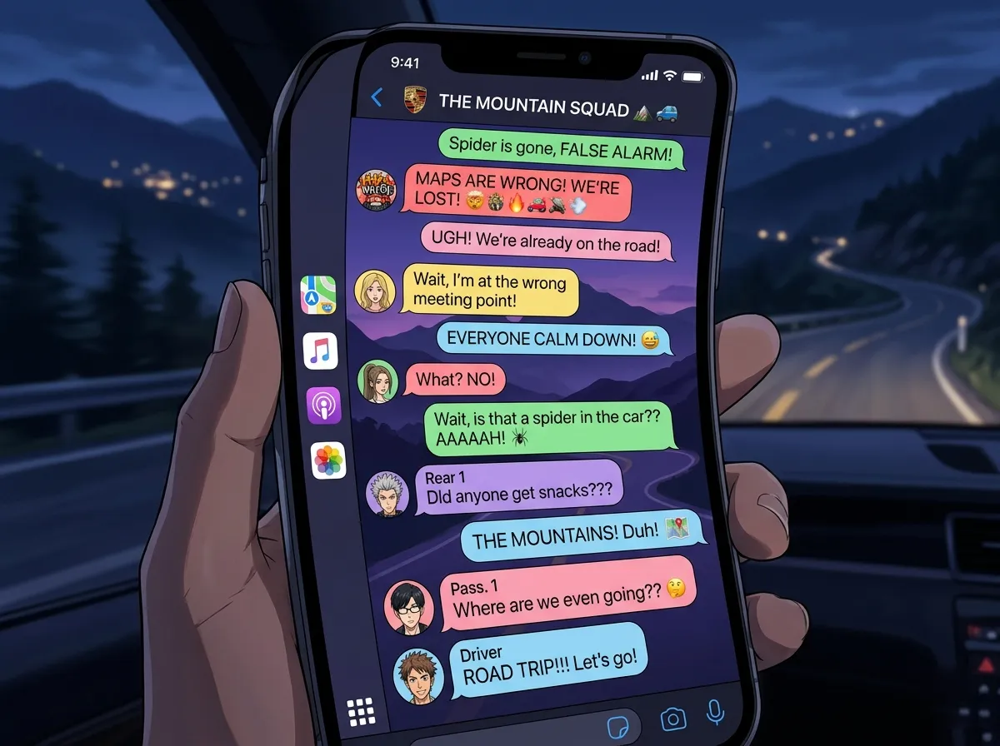
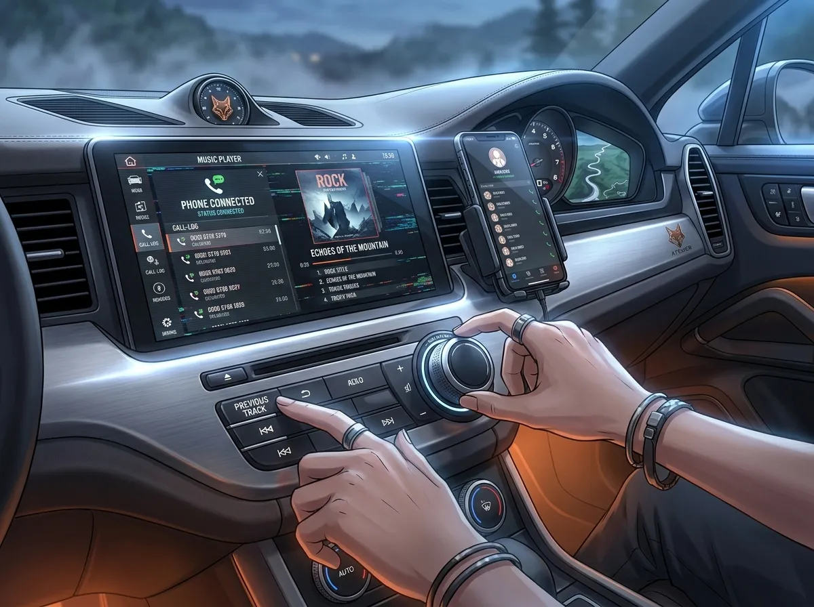
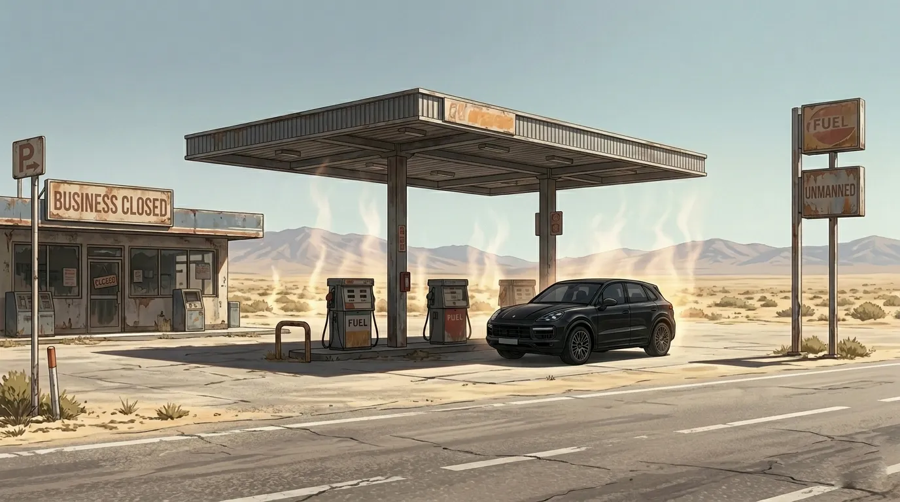
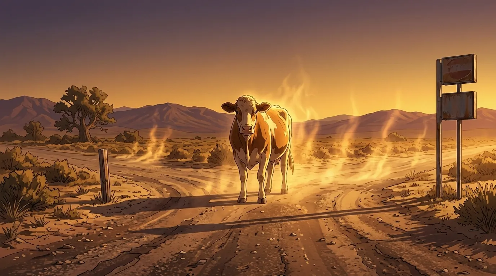
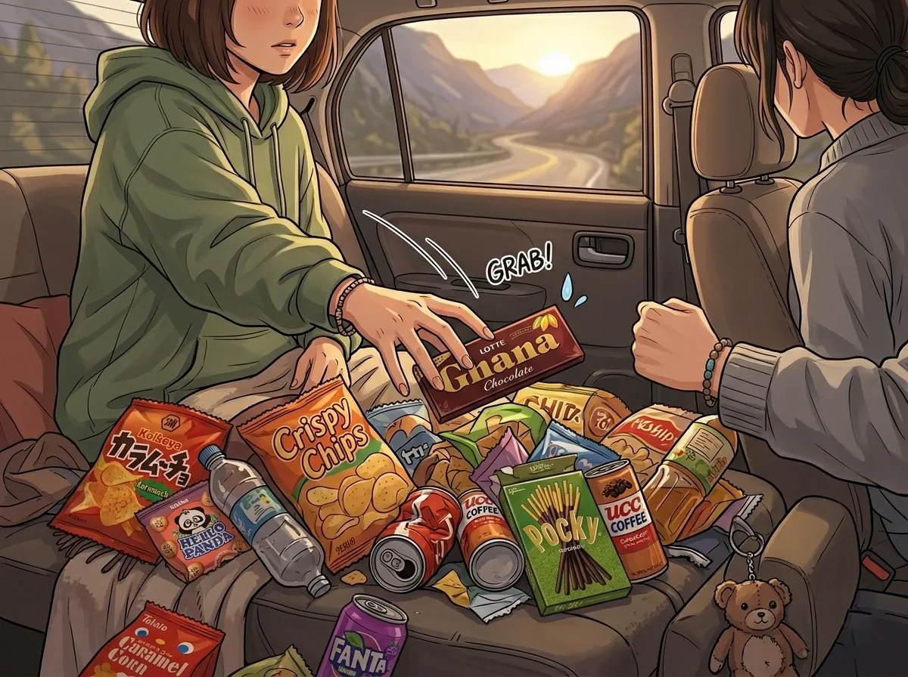
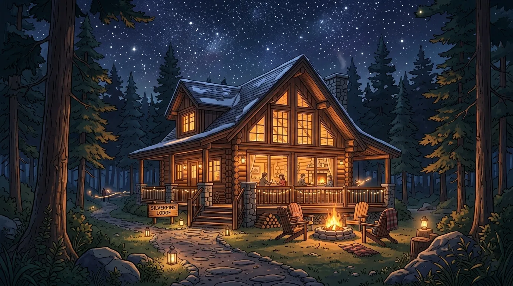
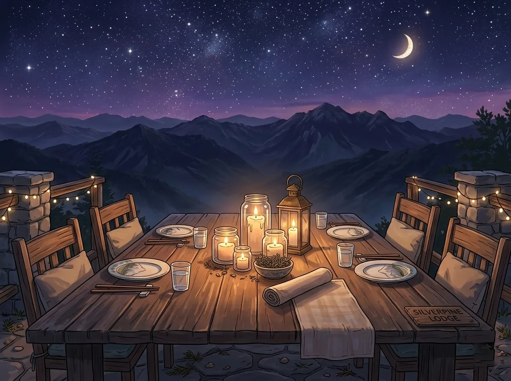
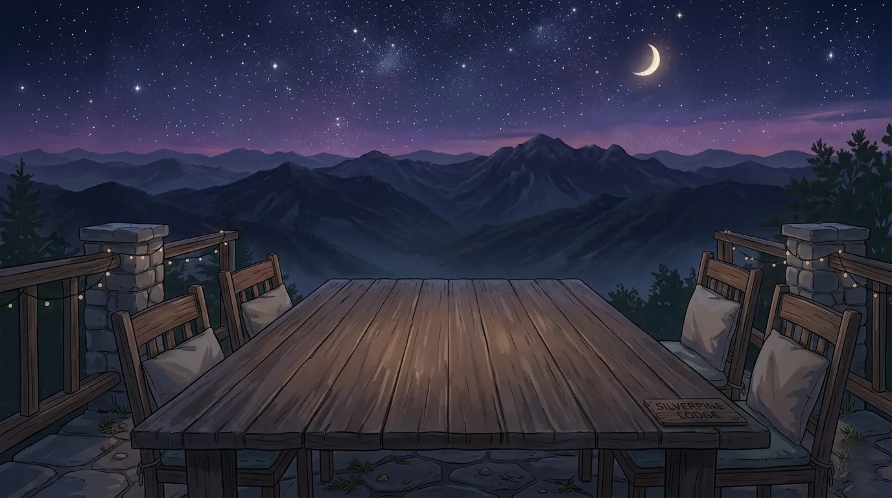
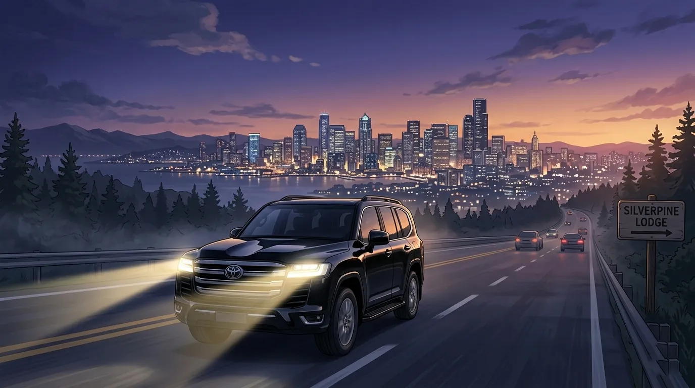

or: four men, one car, zero sense of direction
it started, as most disasters do, with sylus.
"road trip," he said. "this weekend."
no one asked where. no one asked why.
this is what happened next.

sylus arrived first. black SUV. black clothes. black sunglasses. it was 7:45am.
he checked the tires. checked the oil. checked the trunk. everything was perfect.
zayne arrived second. carrying a duffel bag. it looked heavy.
"what's in the bag," asked sylus.
"medical kit. extra water. emergency blanket. road flares."
"we're going for one night."
"preparation is not paranoia."
sylus didn't argue. (he was impressed. he would never admit it.)
rafayel arrived third. wearing sunglasses. a scarf. a hat. it was summer.
"you look ridiculous," said zayne.
"i'm incognito."
"we're going to the countryside."
"fans are everywhere."
zayne sighed. got in the car.
xavier arrived fourth. twenty minutes late. he was carrying a bag of chips.
"that's not breakfast," said rafayel.
"it's pre-snacks."
"pre-snacks aren't a thing."
"they are now."
xavier got in the back seat. opened the chips. started eating.
rafayel got in next to him. "move over. i need leg room."
"the back seat is for sleeping."
"it's 8am."
"i'm tired."
zayne took the passenger seat. "i'm navigating."
"i know where we're going," said sylus.
"i brought a map."
"a paper map?"
"redundancy."
sylus started the engine. "let's go."

ten minutes into the drive, rafayel reached for the stereo.
"what are you doing," said sylus.
"connecting my phone."
"no."
"why not"
"because i'm driving."
"so"
"i choose the music."
sylus pressed play. classical music filled the car.
rafayel stared. "this is funeral music."
"it's Chopin."
"same thing."
zayne didn't look up from his map. "the tempo is appropriate for highway driving."
"you're both insane," said rafayel.
he tried to connect his phone anyway. sylus took it.
"give it back."
"no."
"i'll jump out of the car."
"the door is locked."
rafayel looked at the door. it was locked.
"i hate you."
"i know."
xavier had already fallen asleep. his bag of chips was open on his lap.
rafayel stared at him. "how"
"he's xavier," said zayne.
rafayel gave up. stared out the window. the countryside was... green.
he took out his sketchbook. started drawing.
sylus glanced in the rearview mirror. didn't say anything. kept driving.

two hours in. sylus pulled into a gas station.
"stretch your legs," he said.
rafayel practically ran inside. he needed coffee. and snacks. and revenge.
he bought the most ridiculous energy drink he could find. neon green. skull on the can.
zayne bought water. and a protein bar. and hand sanitizer.
xavier woke up. "are we there yet?"
"no," said rafayel.
"okay." xavier went back to sleep.
sylus filled the tank. checked the tires again. wiped a smudge off the windshield.
"you're obsessed," said rafayel.
"i'm thorough."
"same thing."
rafayel got back in the car. opened his energy drink. took a sip.
his face turned green. (the drink was terrible.)
"how is it?" asked zayne.
"i've made a mistake."
"you made several."
sylus got back in. started the engine. "next stop, lunch."
"where are we eating," asked rafayel.
"there's a town up ahead."
"you looked that up?"
"i planned this trip."
rafayel was quiet. (sylus had planned. that was... thoughtful.)
he didn't say anything. neither did sylus.

"turn left here," said zayne.
sylus turned left.
the road narrowed. then turned to gravel. then dirt.
"this doesn't look right," said rafayel.
"the map says it's correct," said zayne.
"is the map from 1980"
"it's a recent edition."
the road ended. at a cow.
the cow stared at them. they stared at the cow.
"this is not the way," said sylus.
"i followed the map," said zayne.
"the map is wrong."
"the map is not wrong."
"there's a cow."
"cows exist."
rafayel laughed. "we're lost."
"we're not lost," said zayne. "we're... exploring."
"we're lost."
sylus turned the car around. slowly. carefully. the cow didn't move.
"that cow judged us," said rafayel.
"cows don't judge," said zayne.
"that one did."
xavier woke up. "did we miss the exit?"
"we missed everything," said rafayel.
"okay." xavier went back to sleep.

rafayel reached into the back seat. grabbed a bag of chips. xavier's eyes opened instantly.
"those are mine," said xavier.
"you were asleep."
"i was guarding them."
"with your eyes closed"
"tactical rest."
xavier took the chips back. held them close.
rafayel grabbed a chocolate bar. xavier grabbed his wrist.
"that's also mine."
"you can't claim every snack"
"i can. i did."
zayne turned around. "there are more snacks in the trunk."
"the trunk is cold," said xavier.
"snacks don't care about temperature."
"i care."
sylus kept driving. didn't intervene. (he was enjoying this.)
rafayel opened the chocolate bar. took a bite. xavier stared.
"you're dead to me," said xavier.
"worth it."
xavier opened another bag of chips. louder than necessary.
the car was silent except for crunching.
sylus pulled into a scenic overlook. the sun was setting. mountains in the distance. valleys below.
"wow," said rafayel.
"that's... actually beautiful," said zayne.
sylus got out of the car. walked to the edge. didn't say anything.
rafayel followed. "you planned this."
"i found it on a map."
"the same map that led us to the cow"
"a different map."
zayne stood a few feet away. hands in his pockets. looking at the horizon.
"it's quiet," he said.
"that's the point."
xavier was still in the car. eating chips. watching them through the window.
"is he coming out?" asked rafayel.
"no," said xavier from inside the car. "i have snacks."
they stood there. four men. not talking. not needing to.
the sky turned orange. then purple. then dark.
"we should find a place to stay," said zayne.
"i already booked one," said sylus.
"of course you did."
they got back in the car. xavier had finished three bags of chips.
"no dinner for you," said rafayel.
"worth it," said xavier.

the lodge was old. wooden. smelled like pine and firewood.
rafayel loved it immediately.
zayne inspected the bathroom. "the water pressure is adequate."
"adequate is the best you can say?" asked rafayel.
"i've seen worse."
xavier found a couch. lay down. didn't move.
"we haven't even unpacked," said rafayel.
"i'm unpacking mentally."
sylus brought in everyone's bags. (he didn't have to. he did anyway.)
"dinner in an hour," he said. "there's a restaurant down the road."
"you planned that too?" asked rafayel.
"i planned everything."
rafayel was quiet. (sylus had planned everything. for them.)
"thank you," said rafayel.
sylus paused. "don't make it weird."
"i'm not."
"you are."
rafayel smiled. "okay."

the restaurant was small. family-owned. the owner recognized no one. (rafayel was relieved.)
they ordered. ate. talked. about nothing important. the weather. the road. the cow.
"we should name the cow," said rafayel.
"no," said sylus.
"gerald."
"no."
"geraldine."
"stop."
xavier looked up from his food. "the cow's name is jeff."
"why jeff" asked rafayel.
"it looks like a jeff."
zayne sighed. "the cow doesn't have a name."
"it does now," said rafayel. "jeff the judgmental cow."
sylus paid the bill. didn't say anything about the cow.
but later, when they walked back to the lodge, he said: "jeff is a terrible name."
rafayel laughed. "you thought about it."
"no."
"you did."
sylus walked faster. rafayel had to jog to keep up.

later that night, they sat on the porch. stars everywhere. no city lights.
xavier was awake. looking up. "i haven't seen stars like this in..." he didn't finish.
"in a long time," said rafayel.
"yeah."
zayne sat on a rocking chair. didn't rock. just sat. "this was... a good idea."
"i know," said sylus.
"don't let it go to your head."
"too late."
rafayel looked at the sky. "do you think anyone's looking at the same stars right now?"
"probably," said xavier. "that's the nice part."
silence. comfortable silence.
"we should do this again," said rafayel.
"maybe," said sylus.
"that's not a no."
"it's not a yes either."
rafayel smiled. "i'll take it."

the drive back was quieter. not awkward. just... full.
xavier slept the whole way. (no one was surprised.)
zayne navigated. correctly this time. (he checked three maps.)
rafayel drew in his sketchbook. the cow. the overlook. sylus driving.
sylus drove. didn't ask to see the drawings. (he wanted to. he didn't.)
the city appeared on the horizon. too bright. too loud.
"back to reality," said rafayel.
"reality was fine," said zayne. "this was... different."
"good different?"
"yes."
sylus pulled into the parking lot. turned off the engine.
"next time," he said, "i'm choosing the music."
rafayel laughed. "deal."
they got out. stretched. said goodnight.
xavier was still asleep in the car.
"should we wake him?" asked rafayel.
"no," said sylus. "let him dream."
they left him there. (he woke up an hour later. walked home. didn't remember falling asleep.)